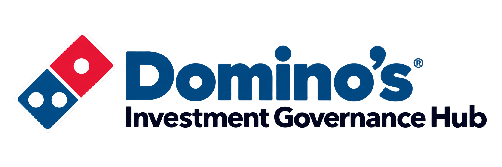

Dashboard
What needs attention across the portfolio?

| Investment | Governance State | Latest Decision | Next Review | Next Step |
|---|---|---|---|---|
| Investments will appear here when data is available. | ||||
The Governance Hub helps DPE monitor investments, run structured continuation reviews and preserve formal decisions over time.
See portfolio attention and current investment evidence.
Open a review at a stage gate or material trigger. Assess six governance dimensions.
Review the findings and choose the accountable continuation outcome.
Preserve immutable history. Start a later cycle when appropriate.
What needs attention across the portfolio?
What investments exist and where are they in governance?
What is happening with this investment?
Overview Current Review History
Why the review started
Scheduled stage gate or Material trigger
What the assessment found
Material Concern · Emerging Concern · Evidence Gap · or no concern
A Material Trigger does not automatically mean a Material Concern.
SHOWCASE Synthetic SAP-schema-compatible scenario data
SAP SANDBOX SAP Business Accelerator Hub Sandbox data
Neither source represents DPE production data.
Assessment findings support governance judgement. The app does not recommend or automatically choose a continuation outcome.
Historical investment snapshot · Current portfolio/live project context unavailable
Transactional evidence and governance inputs are separate. Counts and grouped amounts are system-calculated from returned records. Snapshots may be partial; financial postings are not complete project cost, and procurement assignments are not validated outstanding liability. No exchange-rate conversion, fabricated joins or SAP write-back is performed.
No response received yet.
| Element | Description | Status | Planned Start | Planned End | Forecast End | WBS Internal ID | Milestone | Main Milestone | Approval Status |
|---|
No response received yet.
| Posting Date | Document | G/L Account | WBS ID | Amount | Currency | Debit/Credit | Commitment? | Reversal? | Reversed? | Purchase Document | Description |
|---|
No linked query sent yet.
No diagnostic request sent.
| Purchase Order | Item | WBS ID | Net Amount | Currency | Quantity | Unit | G/L Account | Deleted? | Finally Invoiced? | Created |
|---|
No query sent yet.
Your edits are still on this screen. Retry before leaving this review.
✓ Decision recorded
| Decision Date | Review Trigger | Decision | Decision Owner | Next Review | Record |
|---|